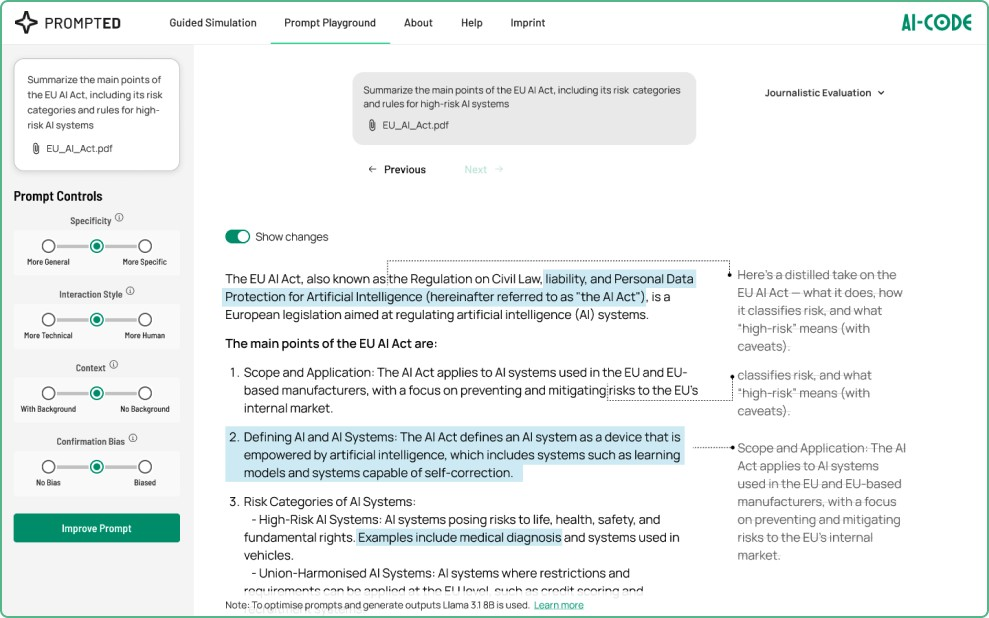
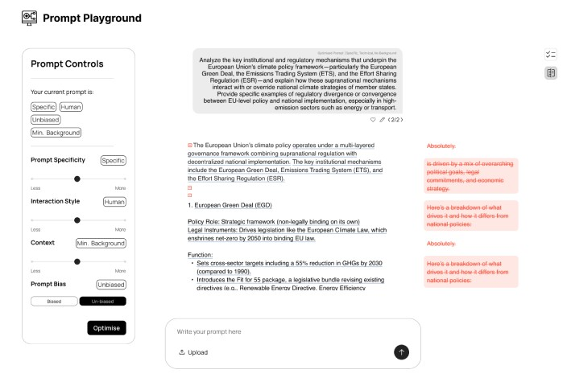
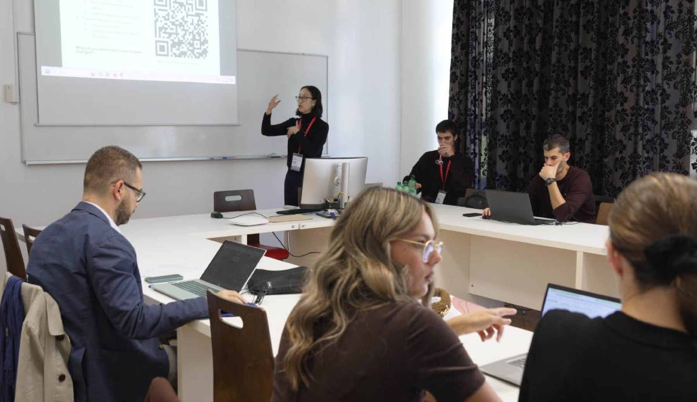
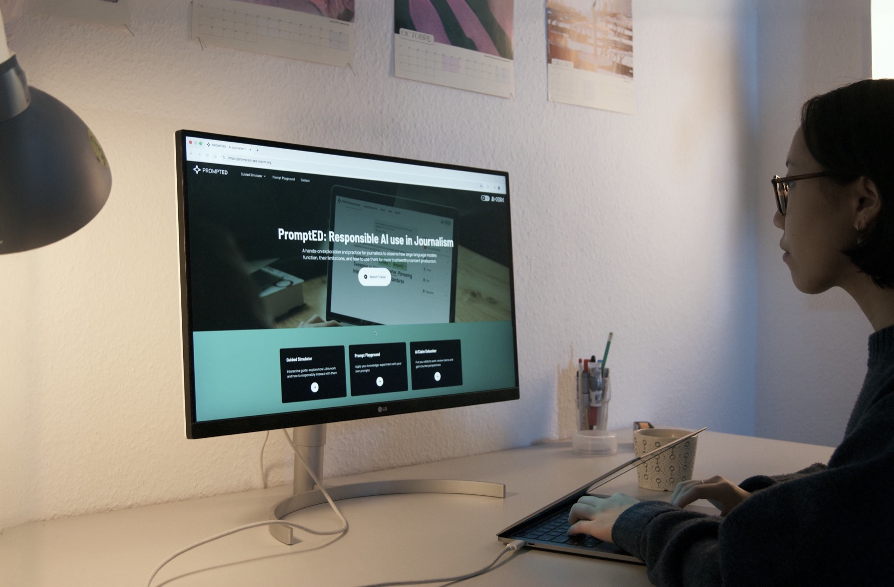

Empowering media professionals against disinformation, by building better mental models of how generative AI actually works.
PromptED is an interactive simulator that helps media professionals understand the principles of generative AI and their associated risks — encouraging responsible AI use within the journalistic workflow.
To understand journalists' perceptions of generative AI, I ran 18 semi-structured interviews and combined the findings with a literature review to guide the design direction.
PromptED is aimed at building appropriate mental models for journalists through experiential learning. To ensure responsible use for trustworthy content production, it was key to base learnings on existing ethical guidelines rather than invent new ones from scratch.
The tool helps journalists distinguish appropriate from inappropriate use, understand prompt construction for better reliability, assess the validity of LLM outputs, and align generative AI use with journalistic ethical standards.
Using the workflows established in interviews, I designed a two-part learning system. Journalists first explore a Guided Simulator to acquire knowledge — LLM principles, prompt construction, output evaluation — then apply it in a Prompt Playground with their own prompts. Users can follow a set path or choose their own learnings, letting people with varying knowledge navigate the tool appropriately.
Six learning units, from next-word prediction and hallucination to system parameters, RAG, and LLM training.
Prompt adaptation, output evaluation, and output comparison — solidifying knowledge on the user's own prompts.
A set path for newcomers, or free navigation for journalists who already know what they need.
A key challenge in the Prompt Playground was showing changes between an original and an optimised output amid heavy text loads. I resolved this with a two-column system — past text displayed next to new — and kept page layouts consistent throughout to support learnability and ease of implementation.
Drag the handle below to compare the early low-fidelity wireframe against the final branded design.


Co-creation sessions, workshops, and user tests guided the design throughout. In total, over 12 co-creation and workshop sessions and 9 individual usability tests were conducted, achieving an SUS score of 78.86 in preliminary testing alone. Users highlighted both helpfulness and a strong match with real-world needs.

While still in progress, PromptED is set to be integrated into media institutions across Europe, helping hundreds of thousands of journalists ensure trustworthy content production.
Early adopters include
